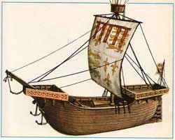

Descrizione degli Edifici
1) Porte di ingresso di Porto Tempestoso: Le porte sono sempre sorvegliate dai soldati delle due brigate di stanza nelle torri adiacenti. Mediamente vi sono una decina di soldati comandati da un Capitano (esperto, combattente del 2° livello di esperienza) e da uno dei due Comandanti Militari (esperto, combattente del 4° - 5° livello di esperienza) a comando di una delle brigate che difende le torri (ogni torre ha una brigata di 3 pattuglie di 10 soldati con un Capitano). Si noti che ai federati non sarà permesso di entrare in territorio pergariano senza permesso rilasciato dal Governatore di Porto Tempestoso. Le porte chiudono sono aperte dalle 7.30 (dopo l'alba) alle 19.30 (all'inizio del tramonto) per poi chiudere tutta la notte. Nel corso della notte possono essere aperte solo con decreto ufficiale delle seguenti autorità: Governatore, Alto Ufficiale della Guardia Cittadina e Primo Generale Imperiale.
2) Faro di Porto Tempestoso: Questo faro costruito in mattoni bianchi è alto 12 metri. Il faro è acceso al tramonto per spegnersi all'alba. Il costo delle spese del faro e della sua manutenzione è a carico dei militari, mentre la sua gestione è operata dal Tempio di Eram che si trova nell'edificio sottostante il faro.
3) Tempio di Eram: La piccola isola (o meglio grosso scoglio) che protegge la banchina commerciale dalle onde dell'oceano, sul quale è stato costruito l'edificio del faro, è anche la sede del Tempio di Eram. Si tratta di un Tempio Marino gestito da un Adoratore del Mare. Si tratta di un tempio satellite del Grande Oracolo delle Onde di Pergar guidato dal potente Maestro delle Onde Xàiron Il Tentacolare.
4) Porto Commerciale: E' la banchina commerciale di Porto Tempestoso dove attraccano le grosse navi commerciali private. Le piccoli dimensioni della banchina permette l'attracco di una nave alla volta. Le altre navi restano all'ancora subito dopo l'isola del faro. Anche per tale motivo nei mesi freddi le navi non arrivano a Porto Tempestoso e la banchina resta vuota (in alcuni casi ospita una nave baleniera). Il traffico navale privato di Porto Tempestoso è quasi esclusivamente proveniente dalla città di Pergar.
 |
In
particolare, dalla città di Pergar parte mensilmente un vascello da
carico del tipo Cog modificate parzialmente come nave passeggeri (100
tonnellate di stiva, 10 posti in cinque cabine, 30 posti in unica
camerata su amaca, movimento base 16 km.). Le partenze avvengono nei
primi giorni (1d6) dei seguenti mesi: |
5) Sede della Società Schiavisti Pergariana: Questo grosso edificio in pietra è la sede distaccata della Società Schiavisti Pergariana la cui sede principale si trova nella città di Pergar. Si tratta di un compagnia che acquista e si occupa del reperimento di schiavi fuori dal territorio pergariano. In particolare, la sede di Porto Tempestoso è famosa per il reperimento di schiavi nelle zone del Nordor ed il loro trasporto e vendita nella capitale. L'edificio è massiccio, vi sono numerose celle e segrete, ed è difeso da un corpo di guardia privato. La sede di Porto Tempestoso è gestita da Vasìris Quarras (Sublime). Al comando del corpo di guardia privato è stato assunto un esperto guerriero, le cui lontane origini sono legate alla penisola di Irendal, Vìnkir (Sublime). Principale contatto e organizzatore delle missioni di "recupero" di schiavi è un membro della corte del Barone della Punta, un violento e malvagio combattente Gnoll, chiamato Kikàra, Zanna Insanguinata (federato autorizzato) per la sua abitudine di mordere e cibarsi dei corpi freschi delle proprie vittime subito dopo averle abbattute. La società effettua il trasferimento degli schiavi nella stagione calda sulle navi della stessa compagnia che giungono da Pergar (non vi sono navi della compagnia di stanza in Porto Tempestoso).
7)
Grande Emporio del Porto:
Questo grande magazzino vende utensili di molte tipologie di provenienza
principalmente pergariana. Il suo gestore, il ricco commerciante
Lètrion
(Sublime) ha conquistato una posizione a Porto Tempestoso nella fornitura di
attrezzature da lavoro o per avventuerieri. Gran parte della merce è prodotta ed
importata da Pergar, tranne per alcuni prodotti di bassa manifattura prodotti in
loco. Modificatori di ritrovamento oggetti:
[COMMON]
70%
[UNCOMMON]
50%
[RARE]
20%
[EXOTIC]
5%
15)
Locanda "Il
Pirata del Nord":
Questa è una modesta ma pulita locanda che non dispone di camere, si mangia cibo
di qualità media a base fondamentalmente di pesce. Utilizzata dai piccoli
artigiani, commercianti e dai sotto ufficiali dell'esercito, la locanda è
gestita da
Sòfran
(Comune) che vive nella stessa con la famiglia. Presso la locanda è possibile
usufruire dei seguenti servizi:
Pasto completo (per persona) di media qualità: 1,5 scuri
Extra per cibo di qualità buona (per persona): 1,5 karsi
17)
Confraternita di Loky:
Questa è la sede della Confraternita di Loky di Porto Tempestoso. Sul grande
portone di legno massiccio con punte in ferro dell'edificio è applicata una
targa in bronzo con inciso questa frase scritta in Nodal (l'antica lingua
dell'Impero del Nordor) "Che
Kilna ci dia la forza di recuperare e salvaguardare i tesori della civiltà
imperiale".
Attualmente la Confraternita è gestita dal Gran Chierico
Argàtis (Sublime)
ed è sotto il controllo della
Saggia Amministrazione del Golfo della Civiltà
(che ha sede a Silveria ed è amministrata dall'Anziano Maestro
Airan).
Questa confraternita si occupa del recupero e della salvaguardia dei tesori
della civiltà imperiale ed, a tal fine, dispone di fondi inviati dalla Saggia
Amministazione per organizzare missioni di recupero, tutela e restauro.
19)
Albergo "L'Ammiraglio
Nero":
Questa è il migliore albergo di Porto Tempestoso. Gestito da un ricco
imprenditore
Salàris
(Sublime) che vive nella stessa con la famiglia. L'albergo è dotato anche di un
piccolo drappello di guardie private (4 soldati veterani ed un capitano
Arkis
Combattente del 2° livello, 50 anni) che svolgono fondamentalmente funzione di
rappresentanza indossando un'antica uniforme da parata della marina dell'Impero
Nordor del colore blu e bianca e dalle forme rigonfie). Presso l'albergo è
possibile usufruire dei seguenti servizi:
Pasto completo (per persona) di buona qualità: 4 scuri
Extra per cibo di qualità superiore (per persona): 1,6 karsi
Extra per prelibatezze (per persona) [33% di presenza]: 4,6 karsi
Extra per alcolici di ottima qualità (per persona): 6 scuri
Extra per alcolici di qualità suprema (per persona) [25% di presenza]: 5
karsi
Stanza singola (per notte): 7,5 scuri
Stanza doppia (per notte): 1,2 karsi
Suite dell'Ammiraglio, doppia con salotto e sala bagno (per notte), riservata ai
Sublimi: 1,5 karsi
Pensione completa (per chi soggiorna esclusi extra): 3 scuri
Stalla privata (al giorno): 2 scuri
Presenza clericale nella Confraternita (anno 198 p.n.):
Gran Chierico: Argàtis ♂ (156 p.n.) 6° livello di esperienza (amministratore della confraternita)
La sua
presenza nella Confraternita è decisamente costante (66%
di trovarlo,
ripetere il tiro ogni 2d6 giorni).
Quando non è impegnato nei riti impegna il suo tempo nella pianificazione delle
missioni di recupero, salvaguardia e tutela dei patrimoni culturali imperiali.
Si occupa anche della produzione di incantamenti minori.
Monaci:
Làiron
♂
4° livello di esperienza (monaco anziano, 66 anni, addetto alla
commercializzazione dei prodotti di Loky),
Zelèa
♀
3° livello di esperienza,
Noris
♂
2° livello di esperienza,
Mildon
♂
2° livello di esperienza
Ricevere incantesimi
clericali al Tempio:
Si noti che il
chierico di Loky deve sempre verificare che siano rispettati due principi
fondamentali:
1) se il richiedente è fedele di una altra divinità e potrebbe rivolgersi a
quella, deve farlo.
2) deve essere una persona ritenuta coscienziosa, onesta e tutto sommato buona.
Si noti che il richiedente non deve necessariamente essere di allineamento
buono. A soggetti di allineamento neutrale e malvagio, che non si macchino di
crimini efferati e dimostrino rispetto per la vita, potranno essere comunque
concesso di utilizzare il potere di Loky previa attenta valutazione della loro
personalità e/o previa richiesta di comportamenti
latu sensu
riparatori della propria condotta di vita. Ai fedeli delle Forze Oscure è
comunemente interdetto l'accesso ai poteri di Loky, fatta eccezione per il Culto
del Serpente i cui ministri e fedeli saranno valutati come normali soggetti di
indole malvagia.
Chi si reca
alla Confraternita di Loky per ricevere incantesimi clericali può usufruire
delle seguente magie (si consideri che la presenza clericale è abbastanza
assidua) e che c'è generalmente una lista d'attesa per cui può essere necessario
attendere. Si noti che se appare un risultato di attesa al termine dell'attesa
sarà disponibile il numero massimo di magie possibili nella tabella per quel
determinato livello (ed il giorno successivo dovrà ripetersi il tiro). Tranne
che per il risultato di attesa il tiro va ripetuto ogni giorno. Al tiro devono
applicarsi i seguenti modificatori:
La magia è richiesta da un fedele di Loky :
nessun modificatore
La magia è richiesta da un fedele di un
culto della Fratellanza della Luce :
-1 al risultato
La magia è richiesta da un fedele di un
culto delle Divinità Neutrali oppure da un ateo :
-2 al risultato
La magia è richiesta da un essere di indole
malvagia o da un fedele del Culto del Serpente :
-4 al risultato
La magia è richiesta per un motivo urgente
di vita o di morte :
+1 al risultato
Magie
clericali di primo livello di potere generale disponibili (1d20):
1 Nessuna (attesa 1d2+1 giorni), 2-3 Nessuna (attesa 1 giorno), 4-6 un
incantesimo, 7-10 due incantesimi, 11-15 tre incantesimi, 16-18 quattro
incantesimi, 19-20 cinque incantesimi.
Magie
clericali di primo livello di potere speciale (1d20):
1 Nessuna (attesa 1d2+1 giorni), 2-4 Nessuna (attesa 1 giorno), 5-7 un
incantesimo, 8-11 due incantesimi, 12-16 tre incantesimi, 17-19 quattro
incantesimi, 20 cinque incantesimi.
Magie
clericali di secondo livello di potere generale (1d20):
1-2 Nessuna (attesa 1d2+1 giorni), 3-5 Nessuna (attesa 1 giorno), 6-9 un
incantesimo, 10-15 due incantesimi, 16-18 tre incantesimi, 19-20 quattro
incantesimi.
Magie
clericali di secondo livello di potere speciale (1d20):
1-2 Nessuna (attesa 1d2+1 giorni), 3-6 Nessuna (attesa 1 giorno), 7-10 un
incantesimo, 11-16 due incantesimi, 17-19 tre incantesimi, 20 quattro
incantesimi.
Magie clericali di terzo livello di potere generale
[previa
presenza del Gran Chierico presso la Confraternita]
(1d20):
1-2 Nessuna (attesa 1d6+4 giorni), 3-5 Nessuna (attesa 1d2+1 giorni), 6-9
Nessuna (attesa 1 giorno), 10-14 un incantesimo
[un tocco guarente]
, 15-18 due incantesimi, 19-20 tre
incantesimi.
Magie clericali di terzo livello di potere speciale
[previa
presenza del Gran Chierico presso la Confraternita]
(1d20):
1-3 Nessuna (attesa 1d6+4 giorni), 4-7 Nessuna (attesa 1d2+1 giorni), 8-12
Nessuna (attesa 1 giorno), 13-17 un incantesimo, 18-19 due incantesimi, 20 tre
incantesimi.
Acquistare oggetti presso la Confraternita:
Presso la Confraternita possono essere acquistati diversi oggetti.
I chierici della Confraternita producono, su richiesta, alcuni incantamenti minori la cui distribuzione segue le regole utilizzate per la vendita degli incantesimi. Il costo degli oggetti deve essere versato alla Confraternita interamente ed in forma anticipata (se l'acquirente fornisce l'oggetto da incantare di qualità pari o superiore a quello normalmente fornito dalla Confraternita costui potrà pagare il solo costo dell'incantamento, oggetti di qualità inferiore non sono accettati). Al termine del periodo di attesa l'acquirente può recarsi presso la Confraternita a ritirare il proprio oggetto magico. Si noti che alcuni oggetti possono essere ordinati solo presso la Saggia Amministrazione in questo caso l'acquirente dovrà aggiungere un costo di 50 karsi per le spese di trasporto (costo doppio se vuole fornire l'oggetto da incantare).
Inchiostro di Kilna (8 boccette):
costo 355 karsi, periodo di attesa 65+(2d12) giorni
Olio Sacro di Zeia (una boccetta con 3 dosi): costo 310 karsi,
periodo di attesa 75+(2d12) giorni
Breviario delle Creature Mostruose e Breviario
Scienza Medica: costo 795 karsi in carta (1
volume, 1 lb.), 760 in pergamena (2 volumi, 1,5 lbs.), periodo di attesa
120+(2d20) giorni
Tomo dell'Arte della Guerra:
costo 1785+50
karsi in carta (1 volume, 4 lbs.), 1715+50
in pergamena (2 volumi, 6 lbs.), periodo di attesa 140+(2d20) giorni
Lanterna
Levitante
(base da 100 g.p.):
costo 2100+50
karsi, periodo di attesa 180+(1d10*6) giorni
Tomo dell'Arte Magica:
costo 2500+50
karsi in carta (1 volume, 4 lbs.), 2450+50
in pergamena (2 volumi, 6 lbs.), periodo di attesa 200+(1d10*6) giorni
Lente
della Comprensione Minore
(lente comune 100 g.p.):
costo 3450+50
karsi, periodo di attesa 240+(1d8*10) giorni
Tomo Minore della Conoscenza:
costo 4500+50
karsi in carta (1 volume, 4 lbs.), 4400+50
in pergamena (2 volumi, 6 lbs.), periodo di attesa 310+(1d10*10) giorni
Presso la
Confraternita è anche possibile ordinare pozioni magiche prodotte presso la
Saggia Amministrazione del Golfo della Civiltà.
La possibile presenza
indica la percentuale di presenza della pozione, pronta per la vendita, presso
il magazzino della Saggia Amministrazione, in tal caso l'acquirente potrà
recarsi presso la Confraternita a recuperare la pozione trascorsi
1d12+3 giorni.
Se il tiro percentuale riesce è presente una singola pozione e può effettuarsi
un ulteriore tiro riducendo la percentuale del malus indicato tra parentesi per
verificare la presenza di una seconda pozione. Si potrà, quindi, procedere per
verificare la presenza di ulteriori pozioni fino a che i tiri sono effettuati
con successo e fino a che applicando il malus (cumulativamente dopo ogni tiro)
non sia raggiunta una percentuale pari od inferiore a 0. Una volta effettuato il
tiro lo stesso non potrà
ripetersi prima che siano trascorsi tre mesi.
Nei casi in cui il liquido magico non è presente in magazzino potrà essere
ordinato. In questo caso sarà necessario pagare interamente ed anticipatamente
il costo del liquido magico che potrà essere ritirato presso la Confraternita
una volta trascorsi un numero di giorni pari a quello indicati nel tempo di
ordinazione. Si noti che in caso di ordinativi di più liquidi magici dovrà
applicarsi per un solo liquido magico il numero di giorni addizionali variabili
previsti dal tempo di ordinazione mentre per tutti gli altri sarà applicato
unicamente il numero di giorni di ordinazione fisso che lo precede.
In ogni caso l'acquirente di pozioni presso la Confraternita di Porto Tempestoso dovrà aggiungere, per ogni pozione, un costo di 50 karsi per le spese di trasporto.
| POZIONE MAGICA | VALORE IN XP | COSTO (karsi) | POSSIBILE PRESENZA | TEMPO DI ORDINAZIONE |
| Potion of Lesser Healing | 65 | 266+50 | 80% (-20%) | 15 + 3d12+1d12+3 giorni |
| Potion of Lesser Rogue Abiity | 80 | 330+50 | 55% (-20%) | 20 + 3d12+1d12+3 giorni |
| Potion of Lesser Magical Power | 125 | 530+50 | 45% (-20%) | 30 + 3d12+1d12+3 giorni |
| Potion of Moderate Healing | 125 | 530+50 | 60% (-20%) | 30 + 3d12+1d12+3 giorni |
| Potion of Minor Arcane Comprehension | 125 | 530+50 | 45% (-20%) | 30 + 3d12+1d12+3 giorni |
| Potion of Moderate Rogue Ability | 175 | 660+50 | 45% (-20%) | 33 + 3d12+1d12+3 giorni |
| Potion of Imminent Danger | 175 | 660+50 | 45% (-20%) | 33 + 3d12+1d12+3 giorni |
| Potion of Combat Mastery | 175 | 660+50 | 45% (-20%) | 33 + 3d12+1d12+3 giorni |
| Potion of Magical Impetus | 200 | 790+50 | 45% (-20%) | 33 + 3d12+1d12+3 giorni |
| Potion of Major Arcane Comprehension | 250 | 990+50 | 35% (-25%) | 36 + 3d12+1d12+3 giorni |
| Potion of Superior Rogue Ability | 250 | 990+50 | 35% (-25%) | 36 + 3d12+1d12+3 giorni |
| Potion of Major Healing | 275 | 1050+50 | 33% (-11%) | 39 + 3d12+1d12+3 giorni |
| Potion of Magical Power | 275 | 1050+50 | 22% (-11%) | 39 + 3d12+1d12+3 giorni |
| Potion of Return | 350 | 1320+50 | 33% (-11%) | 42 + 3d12+1d12+3 giorni |
| Potion of Weapon Mastery | 350 | 1320+50 | 22% (-11%) | 42 + 3d12+1d12+3 giorni |
| Potion of Greater Rogue Ability | 400 | 1650+50 | 22% (-11%) | 45 + 3d12+1d12+3 giorni |
| Potion of Superior Healing | 400 | 1650+50 | 33% (-11%) | 45 + 3d12+1d12+3 giorni |
| Potion of Superior Magical Power | 400 | 1650+50 | 22% (-11%) | 45 + 3d12+1d12+3 giorni |
| Potion of Supreme Healing | 650 | 2650+50 | 22% (-11%) | 60 + 3d12+1d12+3 giorni |
| OLI MAGICI | VALORE IN XP | COSTO (karsi) | POSSIBILE PRESENZA | TEMPO DI ORDINAZIONE |
| Oil of Holy Protection | 275 | 1050+50 | 22% (-11%) | 39 + 3d12+1d12+3 giorni |
| Oil of Weapon Animation | 300 | 1190+50 | 22% (-11%) | 40 + 3d12+1d12+3 giorni |
| Oil of Life Protection | 350 | 1320+50 | 22% (-11%) | 42 + 3d12+1d12+3 giorni |
| Oil of Devotion | 475 | 1850+50 | 22% (-11%) | 50 + 3d12+1d12+3 giorni |
COMPONENTI MATERIALI CLERICALI
Presso la Confraternita, esclusivamente i chierici della divinità, possono rifornirsi acquistando i componenti materiali dei propri incantesimi. Possono trovare facilmente i componenti per le magie di 1°-2° livello di potere, sia generale che speciale. Tale componente materiale ed i componenti materiali per le magie di livello di potere superiore al secondo potranno unicamente essere ordinati presso la Saggia Amministrazione del Golfo della Civiltà la quale li farà pervenire. I componenti così ordinati dovranno essere pagati anticipatamente con l'aggiunta di 50 karsi a parziale copertura dei costi di trasporto e giungeranno presso la Confraternita 1d12+3 giorni dall'avvenuta richiesta.
ACQUA SANTA DI ARLINIR
Presso
la Confraternita,
esclusivamente i fedeli della divinità, possono acquistare acqua santa. Se
muniti di uno dei contenitori utilizzati dalla Confraternita costoro possono
riempirlo al costo di 33 karsi. Altrimenti devono acquistarlo. I contenitori
utilizzati dalla Confraternita sono i seguenti:
Fiaschetta in rame con tappo a vite
decorata con inciso, in bassorilievo, il simbolo di Loky. Peso 1 lb., costo 1
karso.
Fiaschetta in argento con tappo a vite decorata con inciso, in bassorilievo, il
simbolo di Loky. Peso 1 lb., costo 7 karsi.
Ampolla di vetro con tappo di sughero e cera fusa (non riutilizzabile). Peso 1
lb., costo 13 karsi.
PERSONALITA' DI PORTO TEMPESTOSO
FUNZIONARI IMPERIALI
Governatorato
Governatore di Porto Tempestoso, Leidor Valérian (Sublime): E' il governatore di Porto Tempestoso. Ha un potere decretale ufficiale generale, limitato geograficamente alla cittadina di Porto Tempestoso, in tutte le materie non coperte da un diverso funzionario imperiale come di seguito indicato nelle varie sezioni dell'amministrazione imperiale. Costui, inoltre, conferisce i permessi di ingresso nel territorio imperiale ai federati residenti nella Provincia Imperiale del Nordor.
Sezione della Cassa Imperiale
Alto Maestro di Cassa, Vàiron Briss (Sublime): Gestisce la Cassa Imperiale Cittadina di Porto Tempestoso e della Provincia Imperiale del Nordor.
Alto Dirigente della Banca Scura, Hairas Moldor (Sublime): Gestice la Filiale di Porto Tempestoso della Banca Scura.
Sezione delle Scienze e della Magia
Alto Ufficiale delle Scienze e della Magia, Kraidor Vaiss (Sublime) [Serpente]: E' competente per la cittadina di Porto Tempestoso e per il territorio della Provincia Imperiale del Nordor.
Sezione del Controllo della Legge
Alto Maestro di Giustizia, Màlvodar Iros (Sublime): E' competente per la cittadina di Porto Tempestoso e per il territorio della Provincia Imperiale del Nordor.
Sezione della Guardia Imperiale
Alto Ufficiale della Guardia Cittadina, Jester Relan (Sublime): E' al comando della Gendarmeria di Porto Tempestoso.
Alto Ufficiale delle Segrete, Xaris (Sublime): E' al comando delle Segrete dell'Ululato.
Alte Ispettore Imperiale, Sìldar Forin (Sublime): Dirige le investigazioni nella cittadina di Porto Tempestoso e nel territorio della Provincia Imperiale del Nordor.
Sezione Imperiale Militare
Primo Generale Imperiale, Vàldor Radas (Sublime): E' al comando della Piazzaforte Militare di Porto Tempestoso.
Alto Comandante Militare, Turas (Sublime): Gestisce la logistica, gli approvvigionamenti e la fucina militare della Piazzaforte.
La piazzaforte comprende:
- N. 3 gruppi di
armata di 100 soldati a difesa delle mura di stanza nelle torri perimetrali;
Alto Comandante Militare,
Reldon Relan
(Sublime) [Serpente]: E' al comando del gruppo di
armata Vela Viola.
Alto Comandante Militare,
Sairos
(Sublime)[Serpente]: E' al comando del gruppo di
armata Vela Rossa.
Alto Comandante Militare,
Seldran
(Sublime): E' al comando del gruppo di armata
Vela Blu.
- N. 1 gruppo di armata di 100 soldati di stanza nel quartiere militare di Porto
Tempestoso;
Alto Comandante Militare,
Eldron Sper
(Sublime): E' al comando del gruppo di
armata Vela Nera.
- N. 1 nave da guerra di stanza nel porto militare di Porto Tempestoso;
Alto Capitano Imperiale,
Vàiron
Molgon
(Sublime): E' al comando della
Nave da Guerra Imperiale,
Piovra del Nord.
- N. 1 nave militari minori con compiti di vigilanza delle coste e capitaneria
di porto comandate da un Comandante di Vascello (Comune);
Altre Sezioni
Gilda degli Avventurieri e degli Esploratori Pergariani
Maestro d'Avventura ed Esplorazione, Goldar Fiorn (Sublime): Gestisce la Sezione Locale di Porto Tempestoso della Gilda.
Oltre ai vertici dell'amministrazione locale aventi rango di Sublimi, vi sono i seguenti Comuni che ricoprono il ruolo di funzionari imperiali di rilevante interesse.
|
Governatorato |
||
| Nome |
Incarico |
Note |
| Bòldor | Capo della Scorta del Governatore | Serpente, |
| Màlis | Consigliere per la Provincia Imperiale del Nordor | |
| Altea | Consigliere per le Attività Commerciali | |
|
Sezione Imperiale Militare |
||
| Nome |
Incarico |
Note |
| Utor | Capitano di Vascello sulla Piovra del Nord | |
| Mirn | Capitano di Vascello sulla Piovra del Nord | |
| Gheris | Capitano di Vascello sulla Piovra del Nord | |
| Riss | Capitano di Vascello nave Minore Onda Blu | |
| Torovan | Capitano di Vascello nave Minore Onda Smerlado | |
| Gledis | Capitano di Vascello nave Minore Onda Azzurra | |
| Zorin | Comandante Militare I Brigata della Vela Viola | |
| Valton | Comandante Militare II Brigata della Vela Viola | |
| Hierdron | Comandante Militare III Brigata della Vela Viola | Serpente, |
| Siran | Comandante Militare I Brigata della Vela Blu | |
| Mavar | Comandante Militare II Brigata della Vela Blu | Serpente, |
| Sairos | Comandante Militare III Brigata della Vela Blu | |
| Ilgadon | Comandante Militare I Brigata della Vela Rossa | |
| Brais | Comandante Militare II Brigata della Vela Rossa | Serpente, |
| Kliss | Comandante Militare III Brigata della Vela Rossa | |
| Vàiron | Comandante Militare I Brigata della Vela Nera | |
| Mòldovar | Comandante Militare II Brigata della Vela Nera | |
| Verion | Comandante Militare III Brigata della Vela Nera | Serpente, |
| Gross | Comandante Militare addetto ai Rifornimenti | |
| Ailos | Comandante Militare addetto alla Fucina | |
|
Sezione della Guardia Imperiale |
||
| Nome |
Incarico |
Note |
| Nàiros | Comandante della Guardia (Gend. Porto Temp.) | |
| Màlvodar | Ispettore Imperiale | |
| Ragas | Ispettore Imperiale | Serpente, |
| Uran | Ispettore Imperiale | |
|
Sezione del Controllo della Legge |
||
| Nome |
Incarico |
Note |
| Laris | Capo Cancelliere di Giustizia | |
| Valenia | Cancelliere di Giustizia | Serpente, |
| Ghìorn | Cancelliere di Giustizia | |
|
Sezione della Scienza e della Magia |
||
| Nome |
Incarico |
Note |
| Lenèa | Ricercatore del Magico | |
| Voiros | Controllore del Magico | Serpente, |
| Brais | Controllore del Magico | |
| Turas | Controllore del Magico | |
CITTADINI PRIVATI
Oltre ai vertici ai funzionari imperiali esiste una casta di cittadini privati aventi rango di Sublimi.
| Nome |
Incarico |
Note |
| Argàtis | Gran Chierico della Confraternita di Loky | |
| Vasìris Quarras | Società Schiavisti Pergariana (Gestore) | Serpente, |
| Vìnkir | Società Schiavisti Pergariana (Capo delle Guardie) | |
| Salàris | Albergo "La Dimora dell'Ammiraglio" (Gestore) | |
| Lètrion | Grande Emporio del Porto (Gestore) | Serpente, |